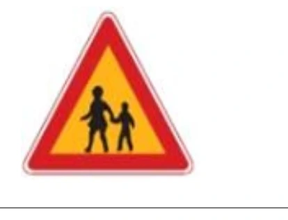

867. What does this safety sign indicate?

- ①The area is designated for kindergarteners, so cars are prohibited.
- ②There is a designated crossing area/crosswalk for children and infants.
- ③The sign should be installed in an area more than 2 km away from a school entrance.
- ④Children and infants are not allowed to cross the road.
Show answer
Answer
② There is a designated crossing area/crosswalk for children and infants.
Reference
Road Traffic Act Enforcement Rules [Appendix 6] Child Protection Sign (Caution Sign No. 133) Notifies that there is a passageway or crosswalk for children or infants. Notifying that schools, kindergartens, etc., commuting to and from school, and children's playgrounds are nearby.
Reference text is a machine translation for study.